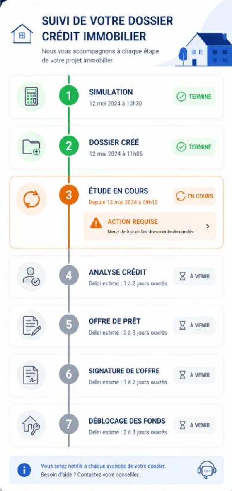

Cadrage et recueil des besoins
Analyse de l'existant, entretiens et ateliers, irritants chiffrés. Je pars du terrain et des utilisateurs, pas de l'outil.
- Analyse de l'existant
- Entretiens
- Ateliers
En recherche active · Orléans et alentours
Business analyst / AMOA
5 ans côté métier en grande consommation, au contact des équipes commerciales, marketing et supply. Aujourd'hui, je recueille les besoins, je les formalise en user stories et je prépare la recette.

5 ans d'expérience métier chez
Ce que j'apporte
Du premier entretien jusqu'à la recette : comprendre le besoin, l'écrire sans ambiguïté, le vérifier dans les données et dans l'outil livré.
Analyse de l'existant, entretiens et ateliers, irritants chiffrés. Je pars du terrain et des utilisateurs, pas de l'outil.
EPICs, user stories avec critères d'acceptation, règles de gestion, maquettes fonctionnelles, priorisation MoSCoW.
Plan de tests fonctionnels, scénarios Gherkin, matrice de couverture, jeux de données de test. Je vérifie avant de livrer.
SQL et Power BI pour vérifier un besoin dans les chiffres, et des indicateurs pour suivre l'adoption après le déploiement.
Méthode
Chaque étape est illustrée par le cas pratique de crédit immobilier (données fictives), disponible en entier plus bas.
Cartographier le processus actuel et chiffrer ce qui bloque.
Dans le cas crédit immobilier : processus en 7 étapes, 40 % de dossiers incomplets.
Entretiens individuels et ateliers avec chaque partie prenante.
Dans le cas crédit immobilier : 15 entretiens et 3 ateliers simulés, 5 départements.
User stories, critères d'acceptation, règles de gestion, maquettes.
Dans le cas crédit immobilier : 3 EPICs et 12 user stories.
Arbitrer avec le métier, découper en livraisons.
Dans le cas crédit immobilier : priorisation MoSCoW, 10 sprints.
Tester chaque règle, puis suivre les indicateurs après le déploiement.
Dans le cas crédit immobilier : 12 scénarios Gherkin, indicateurs de suivi.
En tant que prospect, je souhaite simuler ma capacité d'emprunt en 2 minutes maximum sans création de compte afin d'évaluer la faisabilité de mon projet immobilier avant tout engagement avec la banque.
# Cas alternatif : règle métier à la limite des 33 % Given le client accède au simulateur de crédit When il saisit : Revenus 2 800 €, Charges 700 €, Apport 30 000 €, Projet 200 000 €, Durée 25 ans And il clique sur « Calculer » Then le taux d'endettement calculé est de 32 % And l'indicateur de faisabilité est ORANGE And les boutons « Créer mon dossier » et « Prendre RDV conseiller » sont actifs
Extraits du cas crédit immobilier (données fictives), pages 9 et 29.
Réalisations
Un cas de business analyse, un CRM réellement construit et vérifié, un tableau de bord. Ce sont des exercices sur données fictives, pas des missions réalisées en entreprise.

Le problème : un parcours en 7 étapes, papier et ressaisies, 18 jours en moyenne et 40 % de dossiers incomplets.
Lire le cas PDF, 54 pages
Le problème : visites et opérations promotionnelles suivies dans des fichiers Excel ; rien ne signale une opération négociée puis oubliée.
Lire le cas PDF, 27 pages

La question : d'où vient la croissance du volume et de la marge par rapport à l'année précédente, et ce qu'il faut en retenir.
Voir le tableau de bord PDF, 1 page
Pour juger sur pièce
Envoyez-moi une user story ou un extrait de backlog anonymisé. Sous 48 heures, je vous renvoie :
Parcours
2026
Formation continue et projets personnels
En 2026, j'ai structuré ma reconversion : formation en données (SQL, Python, Power BI), un cas pratique de business analyse mené de bout en bout et un CRM construit sur Salesforce.
Janvier – février
SQL : trois parcours validés
Requêtes métier, jointures, fonctions de fenêtrage, conception de bases de données, reporting.
Attestation « Analyste de données associé en SQL »Attestation « SQL pour les analystes commerciaux »Attestation « Principes fondamentaux de SQL »
Mars
Statistiques et analyse avec Python
pandas, statistiques descriptives, échantillonnage, analyse exploratoire.
Avril
Excel, Power Query, puis Power BI
Préparation et visualisation des données. Cas pratique : un tableau de bord Power BI (données fictives).
Mai
Parcours métier Power BI et cas d'analyse fonctionnelle
Parcours « Analyste de données dans Power BI » validé. Cas pratique : refonte d'un processus de souscription de crédit immobilier (données fictives).
Juin
Power BI avancé
DAX, modélisation, analyse de tendances, conception de rapports, déploiement.
Septembre
Cas pratique : un CRM Salesforce de bout en bout
Modèle de données, qualité des données, automatisations, rapports et tableaux de bord, recette (entreprise et données fictives).
2023 – 2025
Tricotage des Vosges
2021 – 2023
Mondelez International
2021
Buitoni / Mondelez
Rigueur
Le CRM Salesforce a été construit avec l'aide de l'IA, jamais sans vérification. Voici des erreurs repérées pendant ce travail, et ce qui a changé ensuite.
Contact
Le plus simple : un e-mail ou un appel. Mon CV et les trois cas pratiques se téléchargent depuis cette page.